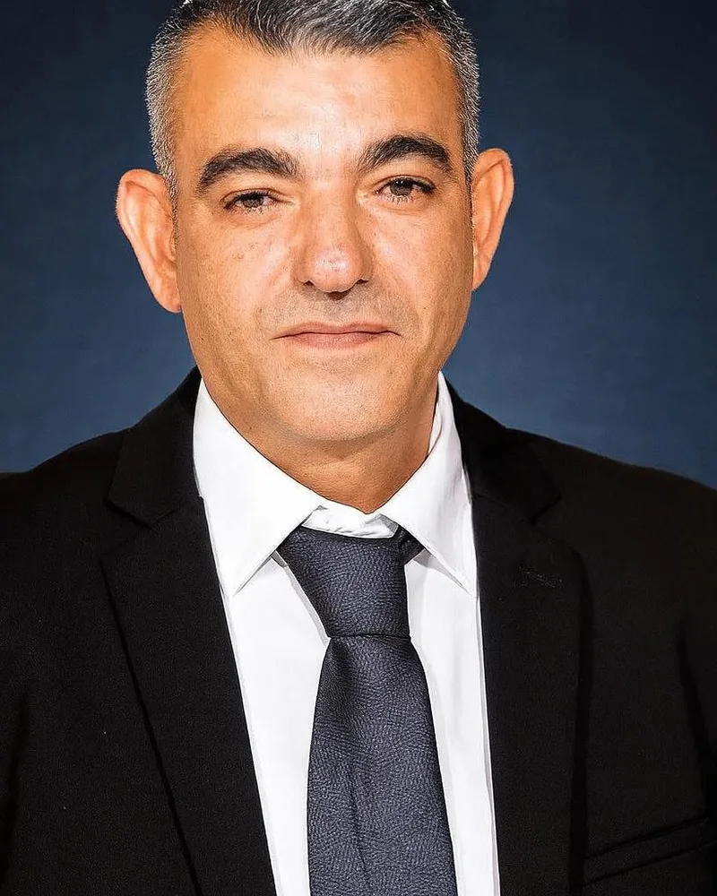

טיפול בטראומה בדימונה
עיבוד טראומה ושחרור עצמי — אונליין מהבית.
תושבי דימונה — אונליין. ייעוץ זוגי לעיר הדרום, מקצועי מהבית.
טיפול בטראומה בדימונה — שירות מקצועי ואישי
דימונה היא עיר חזקה ומגוונת. הליווי שלי מתאים לכל הקהילות.
אם זה מוכר לכם — אתם לא לבד
סימנים שמזהים זוגות מדימונה שפנו אלינו
אם אחד או יותר מאלה מוכרים — זה הזמן להתחיל לטפל. ככל שמחכים יותר, ככה זה הופך למסובך יותר.
למה להתחיל היום ולא בעוד חודש?
דחיינות היא האויב הכי גדול. כל שבוע שעובר — הדפוסים מתחזקים והפתרון נעשה יותר מורכב.
טיפול בטראומה וייעוץ אישי — מה כולל השירות
תחומי טיפול בדימונה ובאזור (באר שבע, אופקים, ירוחם)
🛡️ PTSD ופוסט-טראומה
עיבוד אירוע ספציפי, פגישות 1-10.
🛡️ טראומות ילדות
ילד פנימי פצוע, רפוי דפוסים מתמשכים.
🛡️ טראומות מערכת יחסים
בגידה, פגיעה, אובדן בן זוג.
🛡️ התקפי חרדה ופאניקה
כלים מיידיים + עיבוד שורש.
🛡️ קושי לסמוך אחרי בגידה
תהליך מובנה לבניית אמון.
🛡️ אובדן ואבל ממושך
ליווי בתהליך הסיגול.
שיטות מקצועיות שאני משתמש בהן
טיפול בטראומה וייעוץ אישי מתבסס על 4 שיטות מובילות בעולם — כולן מבוססות-מחקר ובהסמכה אישית.
FLASH Technique
שיטה חדשנית מ-2017 (גרנד) — עיבוד טראומה בלי לחזור לפרטי האירוע.
עיבוד בילטרלי (Brainspotting)
גישה דומה ל-EMDR — עיבוד טראומה דרך תנועות עיניים.
שיטת הילד הפנימי
זיהוי וריפוי החלקים הפצועים מילדות.
CBT לטראומה
גישה התנהגותית-קוגניטיבית — הפחתת תסמינים.

שלום, אני גל ממן
תהליך הליווי — מה מצפה לכם?
שיחת היכרות
שיחה טלפונית של 15 דקות, חינמית. נכיר זה את זה, נבין אם הגישה מתאימה, נתאם פגישה ראשונה.
פגישה ראשונה
בזום מהבית. שעה של מיפוי המצב, הצבת יעדים, ובחירת כלים.
תהליך הליווי
פגישות שבועיות או דו-שבועיות. 🛡️ שיטות מותאמות, כלים פרקטיים, תרגול ויישום בין הפגישות.
תוצאות וסיום
תוך 4-12 פגישות — שיפור מורגש. דלת פתוחה לחזרה במידת הצורך.
זוגות מדימונה מספרים
המלצות אמיתיות מתושבי דימונה שעברו את התהליך
"עולים מאתיופיה. גישה תרבותית-רגישה."
— זוג, התקווה
"אונליין מדימונה, אותה איכות."
— אישה, רמת חובב
"גישה גלובלית-מקצועית."
— זוג, מרכז
המלצות אנונימיות לשמירה על דיסקרטיות. אישור פרסום על-פי דרישת המטופל.
10 שנים. מאות זוגות. תוצאות אמיתיות.
מה משתנה אחרי הליווי?
| תחום | לפני התהליך | אחרי התהליך |
|---|---|---|
| תקשורת | ויכוחים חוזרים בלי פתרון | שיחות שמובילות להבנה |
| קירבה רגשית | דעיכה, ריחוק | חיבור עמוק יותר |
| קונפליקטים | מתפוצצים, פוגעים | נשלטים, מובילים לצמיחה |
| ביטחון | חשש, אי-ודאות | תחושת יציבות אמיתית |
| אינטימיות | ריחוק, חוסר חשק | חזרה לחיבור טבעי |
למה לבחור בגל ממן — תושבי דימונה
מרכז דימונה, רמת חובב, שכונת התקווה, שיכון ממשלתי
שאלות נפוצות — טיפול בטראומה בדימונה
מה זה FLASH Technique?
מי זה "ילד פנימי פצוע"?
זה אותו דבר כמו טיפול פסיכולוגי?
כמה פגישות?
בטוח רגשית?
אונליין מדימונה?
מתאים לזוגות עולים?
אפשר רק בזום?
אם לא רוצה לדבר על הטראומה?
תופעות לוואי?
אנחנו מתחייבים
שיחה ראשונה חינם
15 דקות ללא התחייבות. אם הכימיה לא מתאימה — אין מחיר.
דיסקרטיות מלאה
סודיות מקצועית. שום מידע לא חורג מהפגישה.
גמישות מלאה
ביטול פגישה עד 48 שעות לפני — ללא חיוב.
תוצאות מורגשות
אם לא תרגישו שינוי תוך 4 פגישות — נדבר על שינוי גישה.
טיפול בטראומה גם בערים סמוכות
שירותים נוספים בדימונה
קליניקת ארגמן מציעה גם:
דימונה — דרום, אונליין
שיחת היכרות טלפונית חינמית — 15 דקות לדעת אם זה מתאים
📱 שלחו הודעה בוואטסאפ ←או 📞 050-641-5222 · ✉ argamanclinic@gmail.com